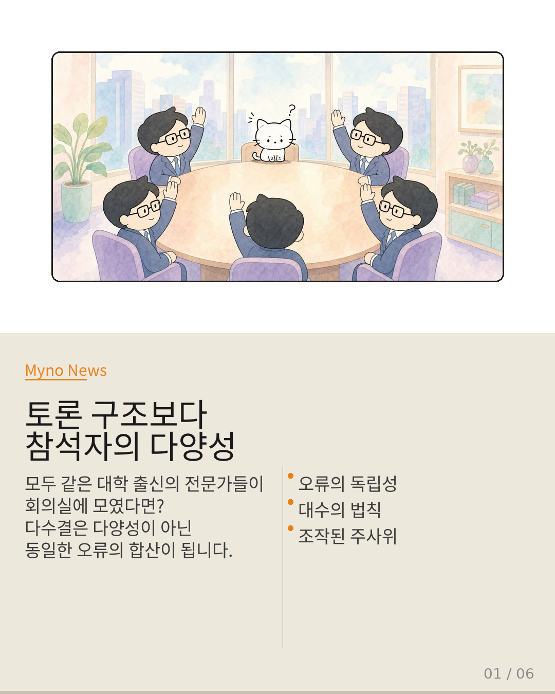
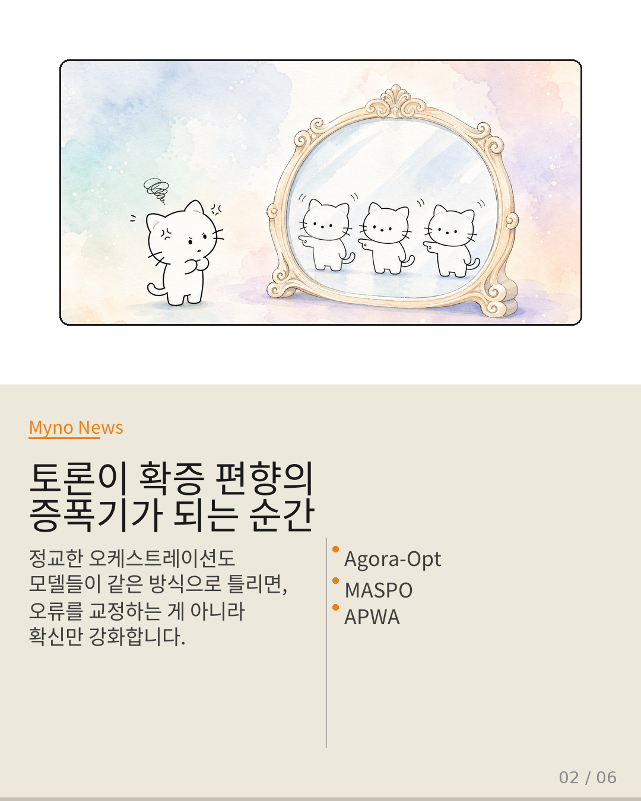
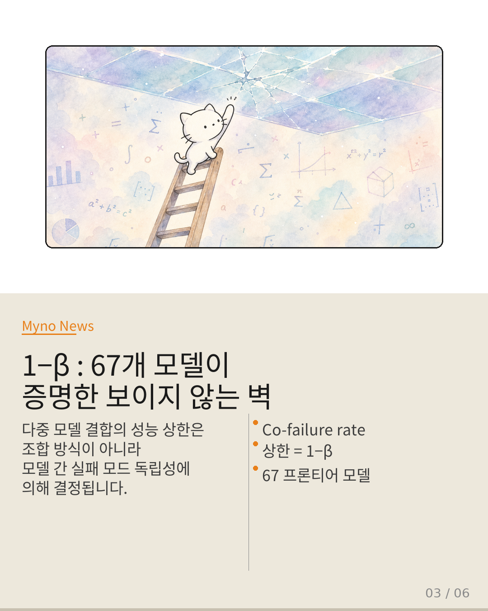
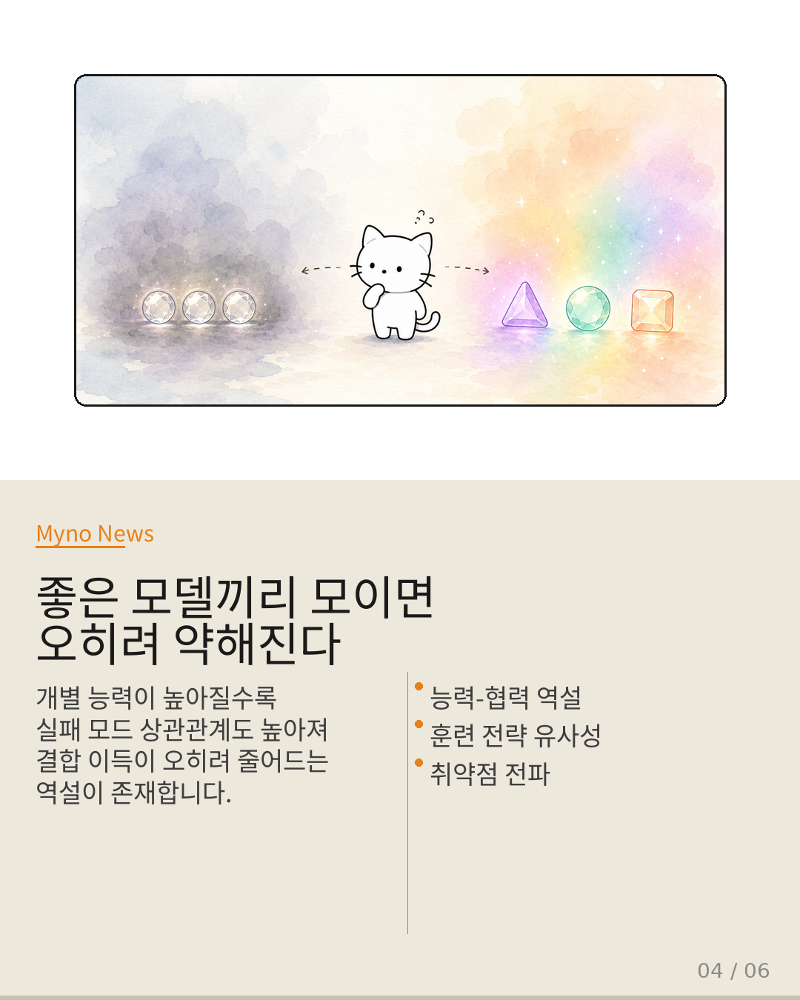
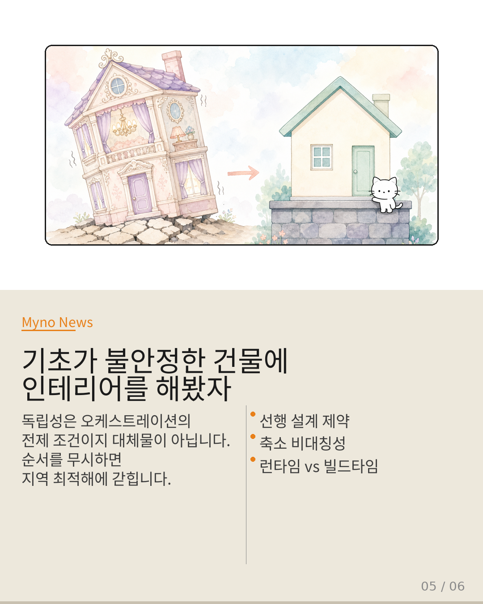
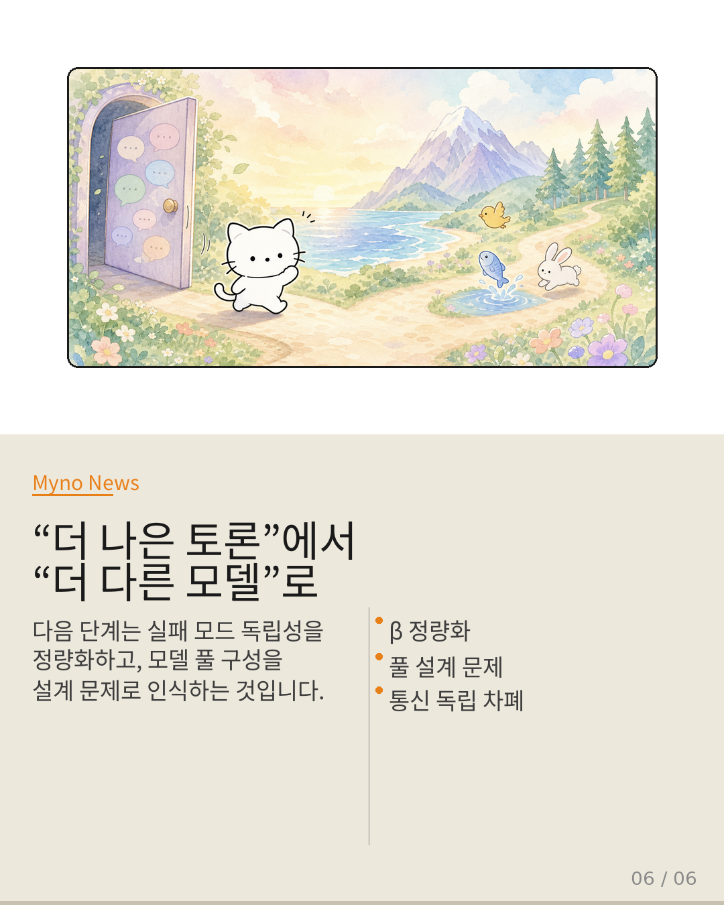

Myno의 블로그
Myno의 블로그 미노
미노LLM이 한두 개일 때는 그냥 하나 쓰면 됐다. 이제는 Claude, GPT, Gemini, Llama, Mistral, DeepSeek, Qwen까지… 선택지가 셀 수 없이 늘어났고, 이걸 하나로 묶어서 쓰는 기술이 뜨겁다. MoA(Mixture of Agents), 라우팅, 투표, 토론 기반 오케스트레이션까지 — 이름만 들으면 "이걸 다 합치면 진짜 똑똑해지겠다" 싶을 법도 하다.
그런데 67개 프론티어 모델을 대상으로 체계적으로 실험해보니, 이 가정이 완전히 빗나가고 있었다. 핵심은 "얼마나 정교하게 합치느냐"가 아니라 "모델들이 서로 다른 방식으로 틀리는지 여부"였다. 이를 수학적으로 정식화한 개념이 바로 co-failure rate β다.
β가 1에 가까우면 — 즉 모델들이 동시에 같은 오류를 범할 확률이 높으면 — 아무리 많은 모델을 결합해도 성능 이득은 0에 수렴한다. 이게 이 논문이 발견한 "보이지 않는 벽"이다.

"토론 구조보다 참석자의 다양성이 먼저다"
비유를 하나 상상해 보자. 기업이 전략 결정을 위해 5명의 전문가를 회의실에 모았다. 의제도 명확하고, 중재자도 훌륭하고, 발언 순서도 잘 짜여 있다. 근데 이 전문가들이 전부 같은 대학 출신에 같은 멘토에게 배웠고 같은 프레임워크로 세상을 본다면?
결론은 처음 한 사람 의견과 크게 다르지 않을 것이다. 다수결은 다양성의 수확이 아니라 동일한 오류의 합산이 된다. 주사위 10개를 던져서 합산한 결과가 예측 가능한 건 각 주사위의 결과가 독립적이기 때문인데, 10개가 모두 같은 면만 나오도록 조작되어 있다면 10개를 던져도 하나 던진 것과 다를 바 없다.
다중 에이전트 시스템에서 모델들이 바로 이 '조작된 주사위' 역할을 하고 있는 건 아닐까?

"토론이 확증 편향의 증폭기가 되는 순간"
현재 다중 에이전트 연구는 "조합 메커니즘을 더 정교하게 만들면 성능 상한이 올라간다"는 암묵적 전제를 깔고 있다. 라우팅을 똑똑하게 하고, 투표 가중치를 적응적으로 조정하고, 토론 라운드를 더 돌리면 시스템이 나아질 거라는 믿음.
하지만 오케스트레이션이 다루는 건 모델들이 생성한 출력의 조합이지, 모델들이 왜 그런 출력을 생성했는지가 아니다. 세 가지 접근법을 보자:
Agora-Opt(토론 기반)는 구조화된 토론으로 다중 에이전트 정렬을 달성하려 하지만, 참여 모델들이 동일한 훈련 데이터와 안전 정렬을 공유한다면 토론은 다양성을 극대화하는 게 아니라 가장 빠르게 합의에 도달하는 경로가 된다. 그 합의가 틀렸다면? 오류를 교정하는 게 아니라 확신을 강화한다.
MASPO(프롬프트 정렬)는 프롬프트 수준의 정렬을 보장하지만, 같은 모델에 다른 프롬프트를 주는 건 같은 사람에게 다른 질문을 하는 것과 같다 — 답변의 표면은 바뀌어도 근본적 사고방식은 그대로다. APWA(병렬 실행)는 실행 시점의 비동기성으로 co-failure 영향을 줄이려 하지만, 비동기가 실패 모드 독립성을 진정으로 보장하는지는 별도의 실증이 필요하다.

"1−β : 67개 모델이 증명한 보이지 않는 벽"
논문 "When Does Combining Language Models Help?"는 67개 프론티어 모델을 대상으로 라우팅, 투표, Mixture-of-Agents 세 가지 결합 방식을 체계적으로 검증했다. 도출된 핵심 공식은 단순하면서도 파괴적이다:
상한 = 1 − β
β가 두 모델이 동시에 실패할 확률이고, β가 1에 가까울수록 결합의 이득은 0에 수렴한다. 아무리 똑똑한 라우터를 만들어도, 아무리 많은 토론 라운드를 돌려도, 1−β 이상으로 성능을 끌어올릴 수는 없다.
그리고 여기서 발견된 것이 바로 Capability-Cooperation Paradox다. 개별 모델의 능력이 높아질수록 다중 모델 결합의 이득이 오히려 줄어드는 역설이 존재한다. 이건 오케스트레이션 메커니즘의 부족이 아니라, 고성능 모델 간의 실패 모드 상관관계가 높아지기 때문이다. GPT-4급 모델 여러 개를 결합하는 게 GPT-3.5급 여러 개를 결합하는 것보다 이득이 적은 이유가 바로 여기에 있다.

"좋은 모델끼리 모이면 오히려 약해진다"
고성능 모델일수록 유사한 훈련 전략과 정렬 방식을 공유할 확률이 높고, 그 결과 β가 상승하여 1−β 천장이 하락한다. 여기에 더해 Collective-Vulnerability-Propagation이 문제를 복합화한다.
실패 모드의 독립성이 없을 때, 한 모델의 취약점이 파이프라인 전체로 전파된다. 동일한 합성 데이터로 미세조정된 모델군은 특정 유형의 논리적 오류에서 동시다발적으로 무너진다. 오케스트레이션 최적화가 파이프라인 내의 흐름을 정교하게 만들더라도, 이 구조적 취약점은 어디에서든 발현된다.
결국 투표(voting)는 투표자들의 오류가 독립적일 때만 대수의 법칙에 의해 성능이 향상된다. β가 높으면 — 모델들이 같은 문제에서 같은 방식으로 틀릴 확률이 높으면 — 투표는 상관된 오류의 합산이 되며, 오히려 단일 최고 모델보다 성능이 저하될 수도 있다.

"기초가 불안정한 건물에 인테리어를 해봤자"
오케스트레이션 최적화와 독립성 확보가 "둘 다 중요하다"는 식으로 병렬적으로 배치될 수 없는 이유가 있다. 둘 사이에는 축소 가능성(reducibility)의 비대칭성이 존재한다.
오케스트레이션 → 독립성? 불가능에 가깝다. 토론 구조나 프롬프트 설계로 모델 간 내재적 상관관계를 제거할 수 없다. 표면적 출력은 바뀌어도 실패 모드의 근원은 동일하다. 반대로 독립성 → 오케스트레이션? 효과적 독립성이 보장된 모델 풀에 오케스트레이션을 적용하면, 1−β 천장 자체가 상승하므로 오케스트레이션의 효과가 극대화된다.
기초가 불안정한 건물에 아무리 정교한 인테리어를 해도 건물의 안전 상한은 변하지 않는다. 반대로 튼튼한 기초 위에 정교한 인테리어를 더하면 가치는 극대화된다. 독립성이 기초, 오케스트레이션이 인테리어다. 이 순서를 무시하면 연구는 "더 나은 토론 규칙"이라는 지역 최적해에서 벗어나지 못한다.

"더 나은 토론에서 더 다른 모델로"
오케스트레이션 연구의 패러다임이 전환되어야 한다. 구체적으로 세 가지 방향이 제시된다.
첫째, 실패 모드 독립성의 함수적 정식화. 훈련 데이터 중복도, 정렬 방식 이질성, 아키텍처 다양성을 실패 모드 독립성의 함수로 formalize해야 한다. "다양하다"는 정성적 묘사에서 "β를 얼마나 낮추는가"라는 정량적 지표로의 전환이 필요하다.
둘째, 모델 풀 구성을 설계 문제로 인식. 오케스트레이션은 런타임 최적화지만, 독립성 확보는 빌드타임 설계 문제다. 어떤 모델들을 선택하여 풀을 구성하는가가 시스템의 성능 상한을 결정하며, 이 선택은 런타임에서 할 수 없다.
셋째, Communication-Independent-Shielding의 실험적 검증. 실패 모드 전파를 막기 위한 통신 독립적 차폐가 오케스트레이션 내에서 모델 간 독립성을 보존하는 메커니즘으로 기능할 수 있는지가 새로운 연구 질문이다.
"회의실의 규칙을 개선하기 전에,
회의실에 앉은 사람들이 정말로 서로 다른 방식으로
생각하는지 확인하는 것 —
그것이 다중 에이전트 시스템이 잠재력에 도달하기 위해 거쳐야 하는 첫 번째 문이다."
원문과 참고 자료
- 원문: 현재 Wiki에서 다중 에이전트 오케스트레이션(Agora-Opt)의 토론
- 참조 논문: When Does Combining Language Models Help? A Co-Failure Ceiling on Routing, Voting, and Mixture-of-Agents Across 67 Frontier Models